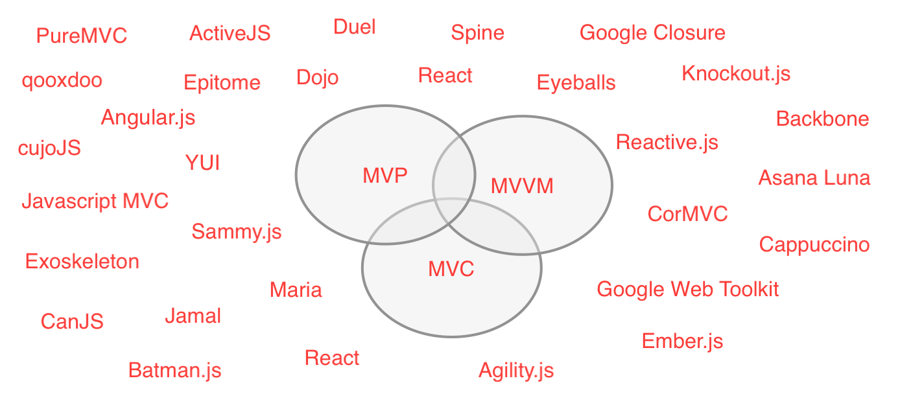
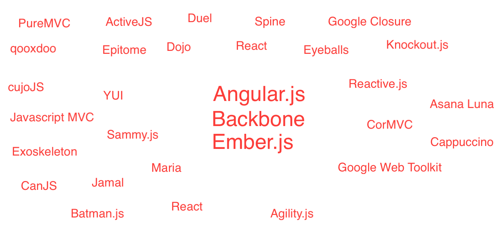
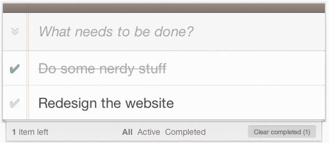

Javascript
Frameworks overview
Ramūnas Kiupelis
Agenda
- When? (framework)
- Why? (framework)
- Frameworks
- Angular
- Backbone
- Ember
- Try it
When?
- Single-page application
- Reduce the number of HTTP requests required for new Views
- An application that will likely only be communicating with an API or back-end data service, where much of the heavy lifting for viewing or manipulating that data will be occurring in the browser
Why?
Advantages
- Adds structure to your application
- Increasing developer productivity
- Makes your code much more maintainable and supports code re-usability
- It's much easier to manage complexity
- Adds build-in functions: Routing, templating, data binding...
Disadvantage
- Learning curve
- Need to adjust code according framework
- Some updates are not backward compatible
- Performance
- Size
- Dependencies
Frameworks
Choice
The big three

- Brat Tech LLC, Google and community.
- Initially released on 2009
- https://github.com/angular/angular.js
Dependencies

Data binding
- Data binding is fully supported
- Two ways data binding
- Models use standard JSON properties
- Provides options for creating custom bindings
Routing
- person/12/1102
phonecatApp.config(['$routeProvider',
function($routeProvider) {
$routeProvider.
when('/person', {
templateUrl: 'partials/person-list.html',
controller: 'PersonListCtrl'
}).
when('/person/:id', {
templateUrl: 'partials/person-detail.html',
controller: 'PersonDetailCtrl'
}).
when('/person/:id/:work_id', {
templateUrl: 'partials/work-detail.html',
controller: 'WorkDetailCtrl'
}).
otherwise({
redirectTo: '/person'
});
}]);
View
- Uses HTML as templating language
- Automatically pulls in HTML templates via AJAX when needed
<ul>
<li ng-repeat="framework in frameworks"
title="{{framework.description}}">
{{framework.name}}
</li>
</ul>

- Jeremy Ashkenas
- Initially released on October 13, 2010
- https://github.com/jashkenas/backbone
Dependencies


Data binding
- Data binding is not supported by default
- There are plugins to support data-binding Epoxy.js
Routing
- person/12/1102
var Workspace = Backbone.Router.extend({
routes: {
"person": "person",
"person/:id": "person",
"person/:id/:work": "work"
},
person: function(id, work) {
...
}
});
View
- Can be integrated with many other third-party template engines
- Default template engine is Underscore templates
<ul>
<% _.each(frameworks, function(framework) { %>
<li title="<%- framework.description %>">
<%- framework.name %>
</li>
<% }); %>
</ul>

- Yehuda Katz, Tom Dale and Ember.js contributors
- Initially released on 2011
- https://github.com/emberjs/ember.js
Dependencies


Data binding
- Data binding is fully supported
- Models use getters and setters, but the binding is automatically
Routing
- person/12/1102
App.Router.map(function() {
this.resource('person', { path: '/person/:person_id' }, function() {
this.resource('work', { path: '/:work_id' });
});
});
View
- Very easy to create re-usable components
- Handlebars are used for templating
<ul>
{{#each frameworks}}
<li {{bind-attr title=description}}>
{{name}}
</li>
{{/each}}
</ul>
Try it
